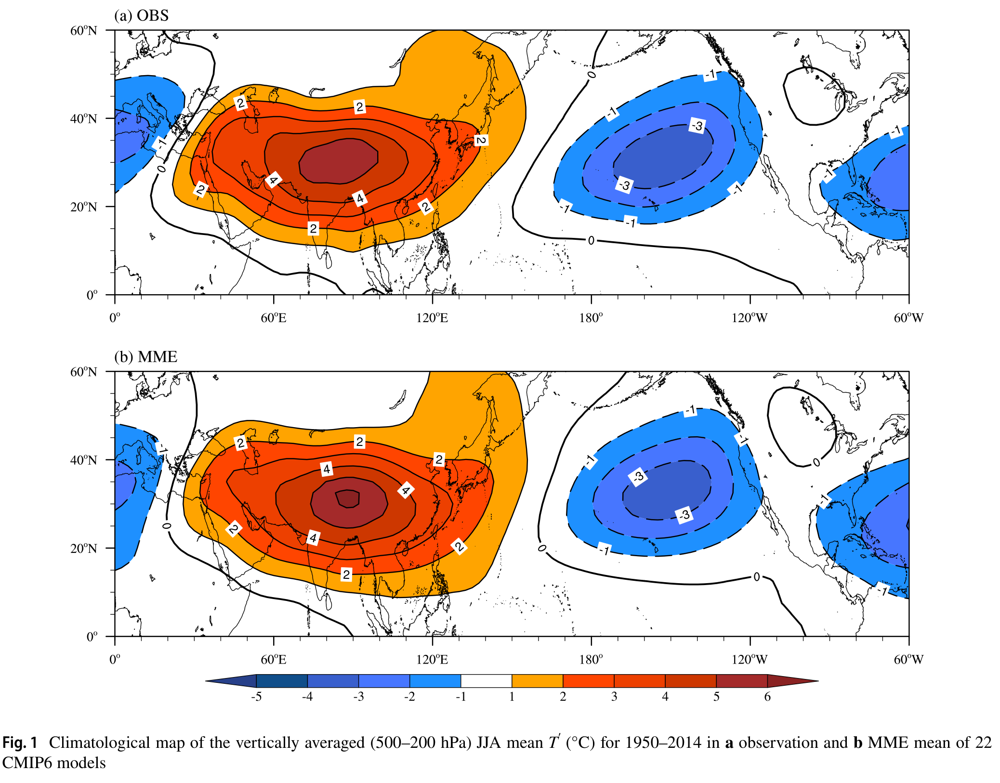
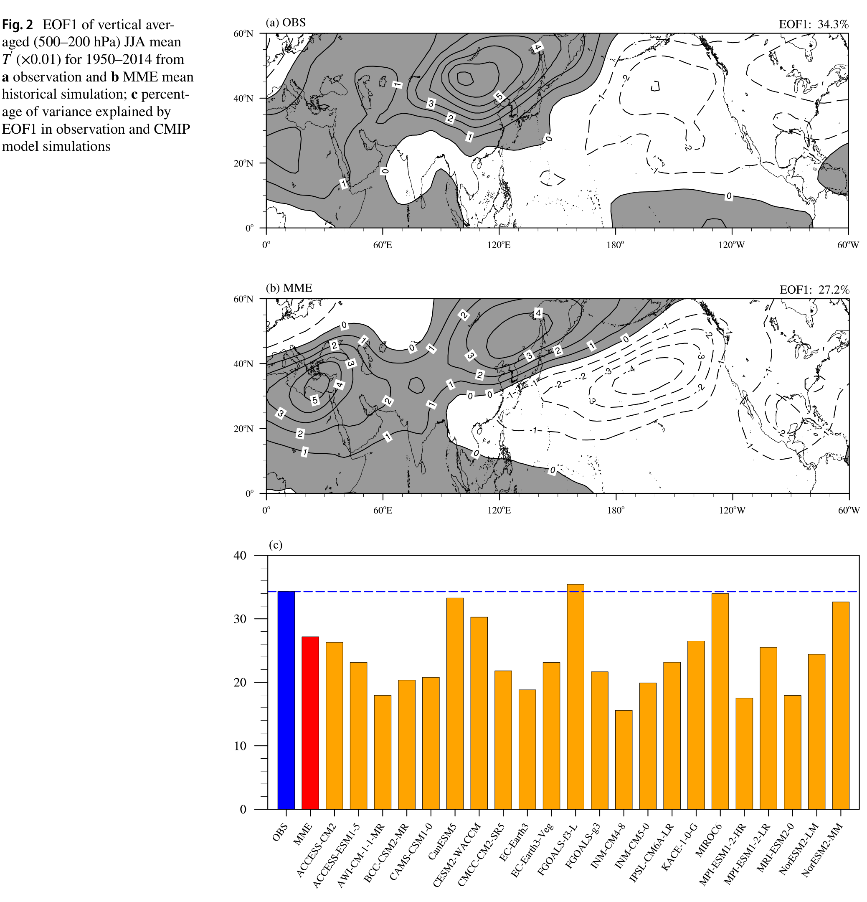
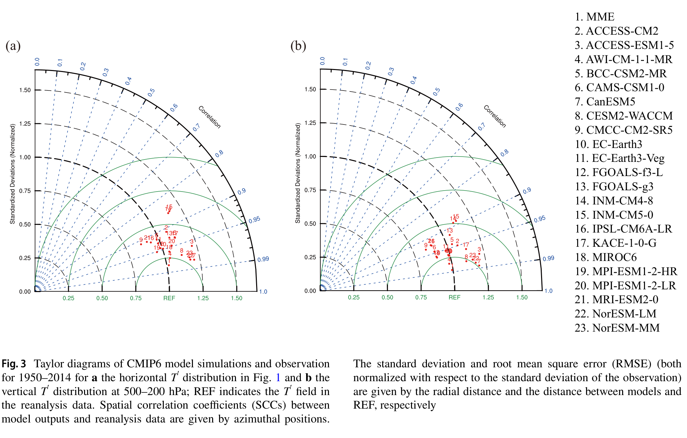
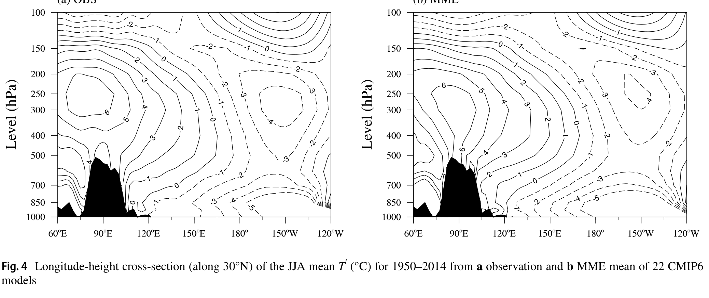
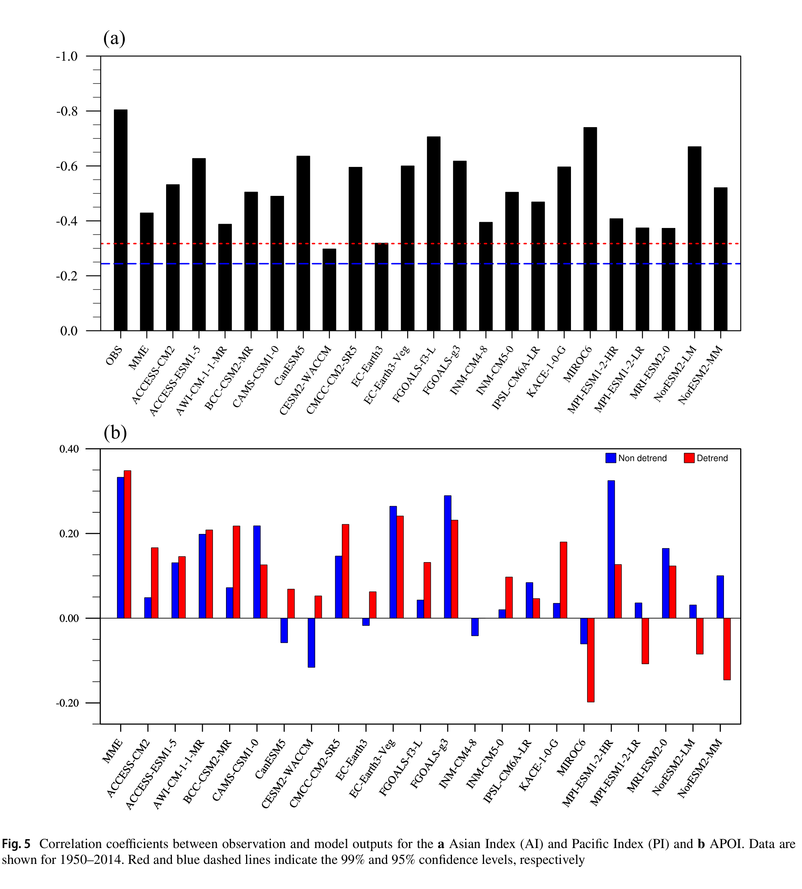
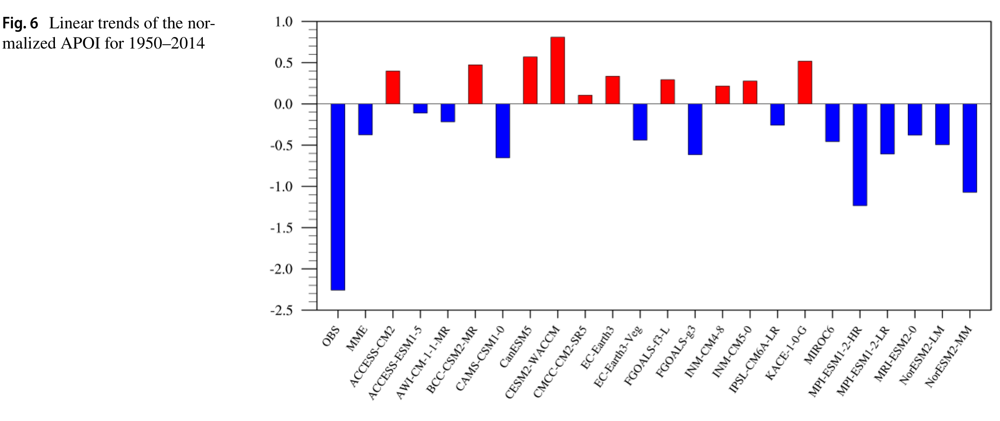
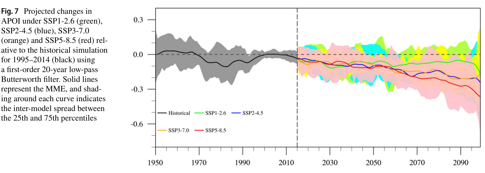
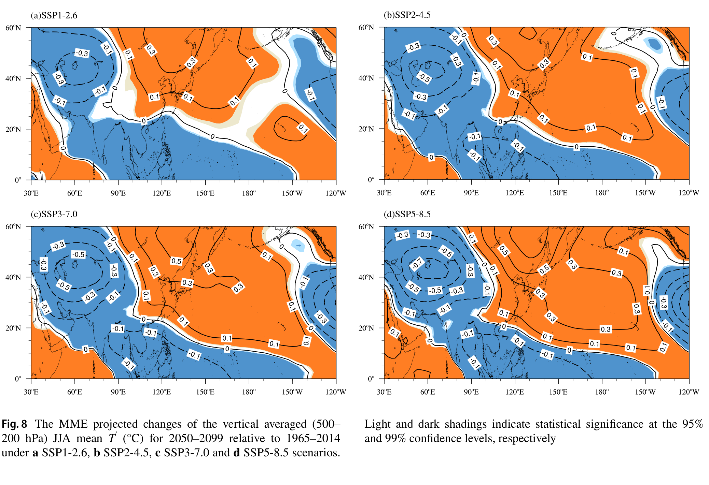
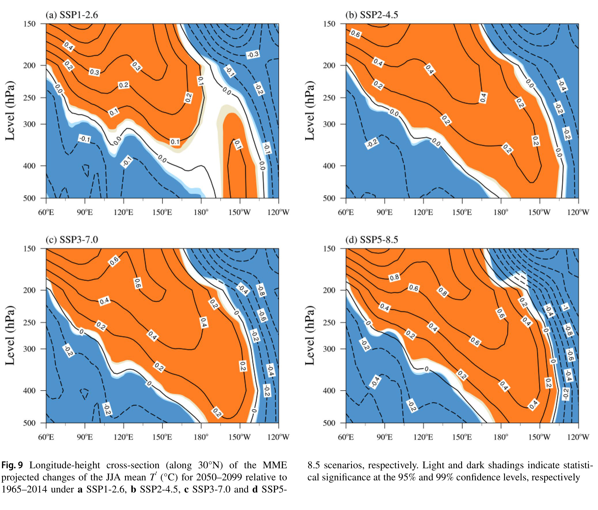
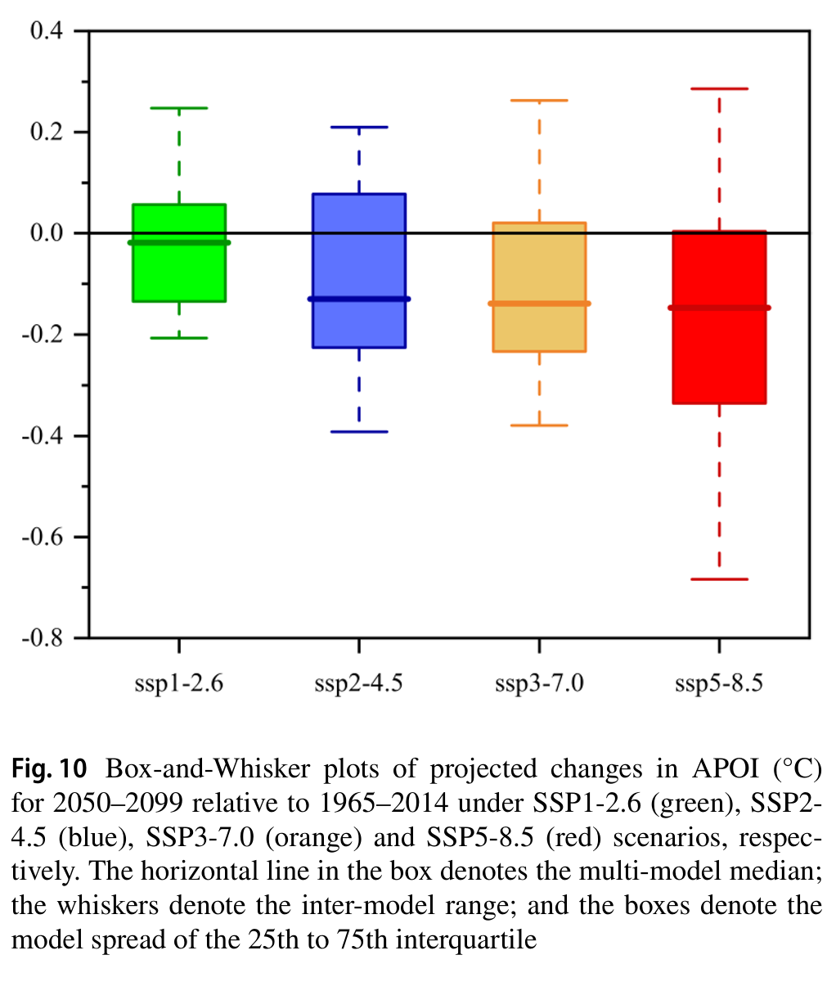

《理论及应用气候学》（2024）155 卷：1067–1079 页 https://doi.org/10.1007/s00704-023-04687-8
Theoretical and Applied Climatology (2024) 155:1067–1079 https://doi.org/10.1007/s00704-023-04687-8
研究论文
RESEARCH
CMIP6 模式对夏季亚洲–太平洋涛动型的评估：历史模拟与未来预估
Assessment of the summer Asian–Pacific Oscillation pattern in CMIP6 models: historical simulations and future projections
Wei Hua¹·²·³ · Changji Xia¹·⁴ · Qin Hu¹ · Kaiqing Yang¹ · Guangzhou Fan²·³
Wei Hua1,2,3 · Changji Xia1,4 · Qin Hu1 · Kaiqing Yang1 · Guangzhou Fan2,3
2022 年 10 月 27 日收稿 / 2023 年 9 月 24 日接受 / 2023 年 10 月 3 日在线发表 © 作者 2023，独家授权予 Springer-Verlag GmbH Austria（Springer Nature 旗下）
Received: 27 October 2022 / Accepted: 24 September 2023 / Published online: 3 October 2023 © The Author(s), under exclusive licence to Springer-Verlag GmbH Austria, part of Springer Nature 2023
* 通讯作者：Qin Hu，hq@cuit.edu.cn
* Qin Hu hq@cuit.edu.cn
1 成都信息工程大学大气科学学院，中国四川省成都市 610225
1 School of Atmospheric Sciences, Chengdu University of Information Technology, Sichuan Province, Chengdu 610225, China
2 四川省高原大气与环境重点实验室，中国四川省成都市 610225
2 Plateau Atmosphere and Environment Key Laboratory of Sichuan Province, Sichuan Province, Chengdu 610225, China
3 四川省气象灾害预测预警工程实验室，中国四川省成都市 610225
3 Meteorological Disaster Prediction and Warning Engineering Laboratory of Sichuan Province, Sichuan Province, Chengdu 610225, China
4 镇远县气象局，中国贵州省镇远县 557700
4 Zhenyuan Meteorological Bureau, Zhenyuan 557700, Guizhou Province, China
亚洲–太平洋涛动（APO）是主导亚洲–北太平洋地区的一种纬向遥相关型，其变率很大，并对区域和全球尺度的气候、经济、社会与环境产生显著影响。
The Asian–Pacific Oscillation (APO), a zonal teleconnection pattern dominating in Asian–North Pacific sector, is highly variable and considerably impacts the climate, economy, society, and environment on regional and global scales.
利用第六次耦合模式比较计划（CMIP6）中 22 个全球气候模式（GCM）的输出，我们研究了夏季 APO 型态，并检验了其在不同共享社会经济路径（SSPs）下的预估变化。
Using 22 outputs of global climate models (GCMs) from Phase six of the Coupled Model Intercomparison Project (CMIP6), we investigated the summer APO pattern and examined its projected changes under different Shared Socioeconomic Pathways (SSPs).
结果表明，大多数 CMIP6 GCM 能够准确刻画 1950–2014 年 APO 的空间特征，但模式再现 APO 年际变率和长期趋势的能力相对较低。
Results show that most CMIP6 GCMs can accurately capture the spatial features of the APO for 1950–2014, while model ability to reproduce APO interannual variability and long-term trend is relatively low.
尽管对长期趋势的再现仍不理想，多模式集合（MME）在再现再分析资料中的 APO 特征方面比单一气候模式更具代表性。
The multi-model ensemble (MME) is more representative in reproducing reproduce APO features in the reanalysis data than the single climate model, although the long-term trend remains unsatisfactory.
此外，在四种 SSP 情景下，MME 预估 21 世纪晚期 APO 强度平均而言将减弱，其中减弱幅度最大的是辐射强迫最高的 SSP5-8.5 情景。
Furthermore, the MME under four SSPs project an average decrease in APO intensity during the late 21st century, with the largest decrease occurring under SSP5-8.5, which is the scenario with the highest radiative forcing.
相对于历史观测，模式预估亚洲大陆上空降温、太平洋上空增暖，且 APO 型态的垂直轴发生倾斜，这将导致未来 APO 略微东移。
The models project cooling over continental Asia and warming over the Pacific relative to historical observations and tilting of the vertical axis of the APO pattern, which results in a slight eastward shift of the APO in the future.
根据 MME 并相对于 1965–2014 年，APO 在 21 世纪中后期可能减弱。
According to the MME and relative to 1965–2014, the APO is likely to weaken during the mid and late 21st century.
此外，尽管仍存在相当大的不确定性，在高排放情景下，各模式对 APO 指数预估变化的彼此一致性较高。
In addition, although considerable uncertainties remain, there is substantial agreement between models in their projected changes of the APO index under high emissions scenarios.
亚洲–太平洋涛动（APO）是亚太地区乃至整个北半球热带外地区的一种主要气候变率模态，在暖季尤为显著（Zhao et al. 2007）。
The Asian–Pacific Oscillation (APO) is a predominant mode of climate variability in the Asia-Pacific region and even the whole extra-tropical Northern Hemisphere, especially pronounced during the warm season (Zhao et al. 2007).
这种跷跷板式现象可大致用一个大型偶极型来刻画，表现为亚洲大陆上空的正/负对流层上层（500–200 hPa）扰动温度（T′）或扰动位势高度（H′）异常与太平洋上空的负/正 T′ 或 H′ 相对应，同时也体现为夏季平均 T′ 或 H′ 的第一经验正交函数（EOF）模态（Zhao et al. 2007, 2008, 2010, 2011; Yang et al. 2023）。
This seesaw phenomenon can be approximately characterized by a large-scale dipole pattern associated with a positive/negative upper-tropospheric (500–200 hPa) eddy temperatures (T′) or eddy geopotential height anomaly (H′) over continental Asia and a negative/positive T′ or H′ over the Pacific Ocean and is also represented by the first empirical orthogonal function (EOF) of the summer mean T′ or H′ (Zhao et al. 2007, 2008, 2010, 2011; Yang et al. 2023).
因此，APO 的正（负）位相对应着亚洲（尤其是青藏高原及其邻近地区）上空的正（负）T′ 以及北太平洋中纬度上空的负（正）异常，这表明对流层在亚洲（北太平洋）上空出现增暖（变冷）。
Thus, a positive (negative) phase of APO is associated with positive (negative) T′ over Asia (especially the Tibetan Plateau and adjacent regions) and negative (positive) anomalies over the mid-latitudes of the North Pacific, which indicates a warming (cooling) troposphere occurs over Asia (North Pacific).
许多研究表明，APO 显著影响区域和全球尺度的气候变率，其影响在亚太地区尤为突出（Zhao et al. 2007, 2012a; Liu et al. 2011; Lin et al. 2019; Xia et al. 2022, 2023）。
Many studies have shown that the APO considerably influences climate variability on regional and global scales and its effect is especially pronounced over the Asia–Pacific region (Zhao et al. 2007, 2012a; Liu et al. 2011; Lin et al. 2019; Xia et al. 2022, 2023).
例如，东亚夏季风（EASM）及与之相伴的降水和温度型态都受到夏季 APO 波动的强烈调制（Zhao et al. 2008, 2012b; Zou et al. 2015; Liu et al. 2017; Hua et al. 2019; Wen et al. 2022）。
For example, the East Asian summer monsoon (EASM) and associated precipitation and temperature patterns are strongly modulated by summer APO fluctuations (Zhao et al. 2008, 2012b; Zou et al. 2015; Liu et al. 2017; Hua et al. 2019; Wen et al. 2022).
此外，北太平洋夏季海表温度（SST）也受到 APO 的影响，其特征为强（弱）APO 对应北太平洋 SST 偏高（偏低）（Zhou et al. 2010）。
Furthermore, summer sea surface temperature (SST) in the North Pacific is also influenced by the APO which is characterized by the enhanced (decreased) SST over North Pacific corresponding to a strong (weak) APO (Zhou et al. 2010).
夏季 APO 还通过激发一支自北太平洋向北大西洋传播的纬向准定常波列而影响北大西洋涛动（NAO）（Zhou and Wang 2015）。
Summer APO also impacts the North Atlantic Oscillation (NAO) by triggering a zonal quasi-stationary wave pattern that propagates from the North Pacific to the North Atlantic (Zhou and Wang 2015).
全球气候模式（GCM）被广泛应用于气候变化研究，是加深我们对过去和当前气候变化的理解并对未来进行预估的有力工具。
Global climate models (GCMs) are widely used in climate change research and are powerful tools to improve our understanding of past and current climate change and for making projections of the future.
第五次耦合模式比较计划（CMIP5）发展了高质量的模拟试验，进一步加深了我们对气候变化的认识（Taylor et al. 2012）。
The fifth phase of the Coupled Model Intercomparison Project (CMIP5) developed high-quality simulation experiments to further our understanding of climate change (Taylor et al. 2012).
已有研究考察了 CMIP5 GCM 对 APO 的模拟能力，包括其结构、变率、对气候的影响以及未来变化。
Previous studies have investigated the performance of CMIP5 GCMs in modeling the APO, including its structure, variability, influence on the climate, and future changes.
Zhou（2016）发现，大多数 CMIP5 GCM 能准确刻画夏季 APO 特征，但部分模式在模拟 APO 年际变率和年代际趋势方面能力较弱。
Zhou (2016) found that most CMIP5 GCMs can accurately capture summer APO features but some models are less skilled in simulating APO interannual variability and decadal trends.
Zhou et al.（2018）进一步研究了当前与未来 APO 与亚太地区大气环流之间关系及相伴的降水异常。
Zhou et al. (2018) further investigated the present and future relationships between APO and the atmospheric circulations over the Asia–Pacific and associated precipitation anomalies.
他们得出结论：在未来增暖情景下，APO 与东亚夏季降水之间的关系可能显著减弱，这可能源于 APO 与东亚急流及西北太平洋副热带高压（WPSH）经向位移之间联系的显著减弱。
They concluded that a considerable weakening of the relationship between APO and East Asian summer precipitation is likely under future warming scenario and this may be caused by the considerable weakening of the linkage between APO and the meridional displacement of the East Asian jet and the Western Pacific subtropical high (WPSH).
世界气候研究计划发布了参加第六次耦合模式比较计划（CMIP6）的 GCM 系列模拟数据，为气候模式研究开辟了新途径（Eyring et al. 2016）。
The World Climate Research Programme has released a series of simulation data from the GCMs participating in the sixth phase of CMIP (CMIP6) and has created new avenues for climate model research (Eyring et al. 2016).
许多研究利用 CMIP6 数据评估了对大尺度气候模态及其与降水和 SST 密切关联的模拟与预估（如 Fredriksen et al. 2020; McKenna et al. 2020; Coburn and Pryor 2021; Chinta et al. 2022）；然而，鲜有研究考察 CMIP6 模式再现 APO 时空变率的能力，或对 APO 进行归因或预估分析。
Many studies have used CMIP6 data to evaluate the simulations and projections of large-scale climate modes and their close association with precipitation and SST (e.g., Fredriksen et al. 2020; McKenna et al. 2020; Coburn and Pryor 2021; Chinta et al. 2022); however, few studies have examined the ability of CMIP6 models to replicate the spatio-temporal variability of the APO, or conducted attribution or projection analyses of the APO.
鉴于 APO 对气候变化的重要影响，对 APO 结构与演变的历史模拟和未来预估，对于我们理解亚太地区的当前及未来气候至关重要。
Given the important influence of the APO on climate change, historical simulations and future projections of APO’s structure and evolution are essential for our understanding of present and future climate in the Asia–Pacific.
因此，本研究利用历史模拟和未来预估，评估 CMIP6 模式再现 APO 时空变率的能力，并考察不同气候情景下 APO 的未来变化。
Therefore, in this study, we used historical simulations and future projections to assess the performance of CMIP6 models in reproducing the spatio-temporal variability of APO and examine future APO changes under different climate scenarios.
本文其余部分组织如下。
The remaining parts of this paper are organized as follows.
第 2 节介绍本研究所用的数据与方法。
In Section 2, we describe the data and methods that were used in this study.
第 3 节将 CMIP6 模式输出与再分析资料进行比较，以评估模式再现 APO 的能力。
In Section 3, CMIP6 model outputs are compared with reanalysis data to assess the performance of the models in reproducing the APO.
第 4 节给出不同气候情景下对 APO 的模式预估，第 5 节给出结论与讨论。
Model projections of the APO under different climate scenarios are presented in Section 4 and conclusions and discussions are presented in Section 5.
本研究使用了 22 个 CMIP6 模式的逐月输出，包括 1950–2014 年的历史模拟，以及共享社会经济路径（SSP）SSP1-2.6、SSP2-4.5、SSP3-7.0 和 SSP5-8.5 下 2015–2099 年的未来预估（O’Neill et al. 2014; Gidden et al. 2019）。
The present study used monthly outputs from 22 CMIP6 models, including historical simulations from 1950 to 2014 and future projections from 2015 to 2099 under the Shared Socioeconomic Pathways (SSPs) of SSP1-2.6, SSP2-4.5, SSP3-7.0, and SSP5-8.5 (O’Neill et al. 2014; Gidden et al. 2019).
为限制模式偏差并确保评估口径一致，我们仅使用每个模式的第一个集合成员（r1i1p1f1）。
To limit model bias and ensure uniformity across our assessment, we only used the first realization (r1i1p1f1) of each model.
我们还采用双线性插值将 22 个模式统一重网格到 2.5°×2.5° 网格。
We also used bilinear interpolation to re-grid the 22 models to a uniform 2.5°×2.5° grid.
模式详情见表 1。
Details of the models are shown in Table 1.
表 1 本研究纳入的 22 个 CMIP6 模式详情
Table 1 Details of the 22 CMIP6 models included in this study
| 模式 Model | 机构/国家 Institute/country | 水平分辨率（纬 × 经）Horizontal resolution (lat × lon) |
|---|---|---|
| ACCESS-CM2 | CSRO-ARCCSS/Australia | 144 × 192 |
| ACCESS-ESM1-5 | CSIRO/Australia | 144 × 192 |
| AWI-CM-1-1-MR | AWI/Germany | 192 × 384 |
| BCC-CSM2-MR | BCC/China | 160 × 320 |
| CAMS-CSM1-0 | CAMS/China | 160 × 320 |
| CanESM5 | CCCma/Canada | 64 × 128 |
| CESM2-WACCM | NCAR/USA | 192 × 288 |
| CMCC-CM2-SR5 | CMCC/Italy | 192 × 288 |
| EC-Earth3 | EC-Earth-Consortium/Europe | 256 × 512 |
| EC-Earth3-Veg | 256 × 512 | |
| FGOALS-f3-L | CAS/China | 180 × 288 |
| FGOALS-g3 | 80 × 180 | |
| INM-CM4-8 | INM/Russia | 120 × 180 |
| INM-CM5-0 | ||
| IPSL-CM6A-LR | IPSL/France | 143 × 144 |
| KACE-1-0-G | NIMS-KMA/Republic of Korea | 144 × 192 |
| MIROC6 | MIROC/Japan | 128 × 256 |
| MPI-ESM1-2-HR | MPI-M/Germany | 192 × 384 |
| MPI-ESM1-2-LR | 96 × 192 | |
| MRI-ESM2-0 | MRI/Japan | 160 × 320 |
| NorESM2-LM | NCC/Norway | 96 × 144 |
| NorESM2-MM | 192 × 288 |
逐月平均气温来自美国国家环境预报中心/国家大气研究中心（NCEP/NCAR）再分析资料（Kalnay et al. 1996），水平分辨率为 2.5°×2.5°。
Monthly mean air temperature with a horizontal resolution of 2.5°×2.5° was obtained from the National Centers for Environmental Prediction/National Center for Atmospheric Research (NCEP/NCAR) reanalysis (Kalnay et al. 1996).
使用 1950–2014 年的再分析资料评估 CMIP6 模式对 APO 的模拟能力。
The reanalysis dataset from 1950–2014 was used to assess the performance of CMIP6 models in modeling APO.
我们在分析中使用了若干气候指数。
We used several climate indices in our analysis.
参照 Zhao et al.（2007），APO 指数（APOI）定义为亚洲（15°–50° N，60°–120° E）与北太平洋（15°–50° N，180°–120° W）之间夏季 T′ 的算术差。
Following Zhao et al. (2007), the APO index (APOI) was defined as the arithmetic difference of the summer T′ between Asia (15°–50° N, 60°–120° E) and the North Pacific (15°–50° N, 180°–120° W).
指数为正值表示 APO 强事件，反之亦然。
A positive index indicates a strong APO event and vice versa.
为度量亚洲和北太平洋上空 T′ 的强度，我们进一步采用亚洲指数（AI）和太平洋指数（PI），分别定义为亚洲区域（15°–50° N，60°–120° E）和北太平洋区域（15°–50° N，180°–120° W）的区域平均 T′。
To measure the intensity of T′ over Asia and the North Pacific, we further used the Asian index (AI) and the Pacific index (PI), which were defined as the regional mean T′ over Asia (15°–50° N, 60°–120° E) and over the North Pacific (15°–50° N, 180°–120° W), respectively.
此外，我们使用 Taylor 图（Taylor 2001）来定量评估各 CMIP6 GCM 再现当前 APO 的能力。
Also, we used the Taylor diagram (Taylor 2001) to quantify the capability of individual CMIP6 GCMs in reproducing the present-day APO.
Taylor 图可从空间相关系数（SCC）、均方根误差（RMSE）和标准差比值（RSD）等方面综合统计评估模拟与观测之间的相似程度，从而直接比较模式性能。
The Taylor diagram can provide a comprehensive statistical assessment of similarity between simulations and observation in terms of their spatial correlation coefficient (SCC), root-mean-square error (RMSE) and the ratio of standard deviation (RSD), and thus enables a direct comparison of model performance.
我们计算了多模式集合（MME）平均，即对所有模式模拟做简单算术平均；它被广泛用于评估 GCM 的相对性能（Gupta et al. 2013; He et al. 2018）。
We calculated the multi-model ensemble (MME) mean, which is a simple arithmetic average across all model simulations and is widely used to assess the relative performance of GCMs (Gupta et al. 2013; He et al. 2018).
采用 Student t 检验考察统计显著性。
The Student’s t-test was adopted to examine the statistical significance.
本研究聚焦北半球夏季（6–8 月，JJA）。
In this study, we focus on boreal summer (June to August, JJA).
历史评估与未来预估分别针对 1950–2014 年和 2015–2099 年进行。
The historical evaluation and future projection were carried out from 1950 to 2014 and from 2015 to 2099, respectively.
此外，选取 2050–2099 年时段，与 1965–2014 年历史时段相比较，分析四种 SSP 情景下 APO 的未来变化。
Additionally, the period of 2050–2099 is selected to analyze future changes of the APO under the four SSPs scenarios in comparison with the historical time period of 1965–2014.
我们首先将 MME 平均与再分析资料进行比较，以评估模式对气候平均 JJA T′ 空间结构的模拟性能。
We first compared the MME mean with reanalysis data to assess model performance in simulating the spatial structure of climatological JJA mean T′.
在观测中，显著正值主要出现在亚洲上空，最大值超过 5 °C；而显著负值主要出现在北太平洋中东部上空，最小值低于 −3 °C，呈现出亚太区域清晰的纬向跷跷板型态（图 1a）。
In the observation, the marked positive values are mainly found over Asia with maximum values exceeding 5 °C, while significant negative values are mostly observed over central eastern North Pacific with minimum values below −3 °C, which shows a clear zonal seesaw pattern over the Asia–Pacific region (Fig. 1a).
总体而言，MME 能准确刻画对流层上层 T′ 的主要特征（图 1b），包括亚洲和北太平洋上空分别为正、负 T′ 异常。
Generally, the MME can accurately capture the main characteristics of upper-tropospheric T′ (Fig. 1b), including positive and negative T′ anomalies over Asia and the North Pacific, respectively.

图 1 1950–2014 年垂直平均（500–200 hPa）JJA 平均 T′（°C）的气候态分布图：a 观测，b 22 个 CMIP6 模式的 MME 平均
Fig. 1 Climatological map of the vertically averaged (500–200 hPa) JJA mean T′ (°C) for 1950–2014 in a observation and b MME mean of 22 CMIP6 models
随后，我们对亚太区域的观测和 MME 平均的夏季对流层上层 T′ 进行了 EOF 分析。
We then conducted EOF analyses of summer upper-tropospheric T′ from observation and from the MME mean for the Asia–Pacific region.
在观测中，第一模态（EOF1）（图 2a）解释了总方差的 34.3%，并通过 North 检验（North et al. 1982）。
In the observations, the first mode (EOF1) (Fig. 2a) explains 34.3% of the total variance and passes the North test (North et al. 1982).
可以看到，亚太扇区存在明显的纬向跷跷板结构：欧亚大陆以正值为主，北太平洋以负值为主，这表明两区域的 T′ 之间存在显著的负相关。
One can see that there is a distinct zonal seesaw structure over the Asia–Pacific sector, with positive values predominating in Eurasia and negative values prevailing in the North Pacific, which suggests a significant negative correlation between T′ of the two regions.
在 MME 平均中，EOF1 解释了总方差的 27%（图 2b），其空间分布与观测的 EOF1 高度一致。
In the MME mean, EOF1 accounts for 27% of the total variance (Fig. 2b) and its spatial distribution is well comparable to that of EOF1 of the observation.
这些模式也成功再现了亚洲与北太平洋夏季对流层上层 T′ 之间的反相关系。
The models also successfully reproduce the inverse relationship between summer upper troposphere T′ in Asia and that in the North Pacific.
就单个模式而言，EOF1 模态的解释方差介于 15.6%（INM-CM4-8）到 35.4%（FGOALS-f3-L）之间，且除 INM-CM4-8 外所有模式均通过 North 检验，表明 22 个 CMIP6 模式中的大多数都能合理模拟 APO 的空间型态（图 2c）。
For the individual models, the explained variance of EOF1 mode ranges from 15.6% (INM-CM4-8) to 35.4% (FGOALS-f3-L) with all the models pass the North test except INM-CM4-8, indicating that most of the 22 CMIP6 models can reasonably simulate the spatial pattern of APO (Fig. 2c).

图 2 1950–2014 年垂直平均（500–200 hPa）JJA 平均 T′（×0.01）的 EOF1：a 观测，b MME 平均历史模拟；c 观测与 CMIP 模式模拟中 EOF1 的解释方差百分比
Fig. 2 EOF1 of vertical averaged (500–200 hPa) JJA mean T′ (×0.01) for 1950–2014 from a observation and b MME mean historical simulation; c percentage of variance explained by EOF1 in observation and CMIP model simulations
利用 Taylor 图，我们将各模式及 MME 平均的 T′ 与观测 T′ 进行比较，以评估模式对亚太区域 APO 水平和垂直结构的模拟能力（图 3）。
Using Taylor diagrams, we compared T′ from individual models and the MME mean with T′ from observation to assess model performance in simulating the horizontal and vertical structures of APO over the Asia–Pacific (Fig. 3).

图 3 1950–2014 年 CMIP6 模式模拟与观测的 Taylor 图：a 对应图 1 的水平 T′ 分布，b 对应 500–200 hPa 的垂直 T′ 分布；REF 表示再分析资料中的 T′ 场。
Fig. 3 Taylor diagrams of CMIP6 model simulations and observation for 1950–2014 for a the horizontal T′ distribution in Fig. 1 and b the vertical T′ distribution at 500–200 hPa; REF indicates the T′ field in the reanalysis data.
模式输出与再分析资料之间的空间相关系数（SCC）由方位角位置给出。
Spatial correlation coefficients (SCCs) between model outputs and reanalysis data are given by azimuthal positions.
标准差与均方根误差（RMSE）（均相对于观测标准差归一化）分别由径向距离以及模式与 REF 之间的距离给出
The standard deviation and root mean square error (RMSE) (both normalized with respect to the standard deviation of the observation) are given by the radial distance and the distance between models and REF, respectively
显然，这些模式能够很好地再现 APO 的水平和垂直结构。
Clearly, the models can adequately reproduce the horizontal and vertical structures of the APO.
对于水平 T′，除 INM-CM4-8 和 INM-CM5-0 外，所有模式的 SCC 都超过 0.9。
For horizontal T′, SCCs of all models, except INM-CM4-8 and INM-CM5-0, exceed 0.9.
此外，CMIP6 模拟相对于观测的 RMSE 介于 0.25（AWI-CM-1-1-MR）到 0.60（INM-CM5-0）之间，且总体低于 0.5，表明 CMIP6 模式在再现 APO 水平型态方面具有良好技巧。
Furthermore, the RMSEs of the CMIP6 simulations relative to the observations range from 0.25 (AWI-CM-1-1-MR) to 0.60 (INM-CM5-0) and generally below 0.5, signifying good skill of CMIP6 models in reproducing APO horizontal pattern.
此外，大多数 CMIP6 模式的水平 APO 型态归一化标准差都落在 1±20% 的范围内。
Also, most of the CMIP6 models show the normalized standard deviation within the range of 1 ± 20% for the horizontal APO pattern.
CMIP6 模式也能很好地刻画 T′ 的垂直结构。
The CMIP6 models can adequately capture the vertical structures of the T′ as well.
垂直 T′ 的 RMSE、SCC 和归一化标准差分别主要落在 0.90–0.99、0.21–0.52 和 0.84–1.21 的范围内。
The RMSE, SCC, and normalized standard deviation of vertical T′ are mainly in the range of 0.90–0.99, 0.21–0.52, and 0.84–1.21, respectively.
此外，MME 平均的性能优于大多数单个模式，其水平和垂直 T′ 模拟的 SCC、RSD 和 RMSE 分别为 0.98、1.01、0.20 和 0.98、0.99、0.16。
In addition, the performance of the MME mean is superior to that of most individual models, with the SCCs, RSDs and RMSEs for horizontal and vertical T′ simulations being 0.98, 1.01, 0.20 and 0.98, 0.99, 0.16, respectively.
这些结果表明，大多数 CMIP6 模式能够准确再现 APO 在对流层上层的空间结构。
These results suggest that the majority of the CMIP6 models can accurately reproduce the spatial structure of the APO in the upper troposphere.
下面考察观测和 MME 平均模拟中 APO 的垂直结构（图 4）。
In the following, we examine the vertical structure of APO from observation and MME mean simulation (Fig. 4).
在观测的夏季 T′ 经度–高度剖面（沿 30° N）上，自对流层低层至 150 hPa 存在一个准正压的垂直偶极型：亚洲上空为正极，北太平洋上空为负极（图 4a）。
In the longitude–height cross section (along 30° N) of summer T′ from observation, there is a quasi-barotropic vertical dipole pattern with a positive pole over Asia and a negative pole over North Pacific from the lower troposphere to 150 hPa (Fig. 4a).
与观测一致，MME 能再现这些特征中的大部分，其经度–高度剖面与观测惊人地相似（图 4b）。
In consistent with the observations, the MME can reproduce most of these features, and the longitude–height cross section is strikingly similar to that from observation (Fig. 4b).

图 4 1950–2014 年 JJA 平均 T′（°C）的经度–高度剖面（沿 30°N）：a 观测，b 22 个 CMIP6 模式的 MME 平均
Fig. 4 Longitude-height cross-section (along 30°N) of the JJA mean T′ (°C) for 1950–2014 from a observation and b MME mean of 22 CMIP6 models
此外，我们发现 INM-CM4-8 和 INM-CM5-0 在水平和垂直方向上再现 APO 气候特征方面明显逊于其他 CMIP6 输出（图 3）。
Additionally, we find that INM-CM4-8 and INM-CM5-0 are obviously inferior to other CMIP6 outputs in reproducing the climatological characteristics of APO in both the horizontal and vertical directions (Fig. 3).
综合考虑各模式的表现，我们选取两个最佳模式（AWI-CM-1-1-MR 和 EC-Earth3）和两个最差模式（INM-CM4-8 和 INM-CM5-0），初步探究 INM-CM4-8 和 INM-CM5-0 与其他模式存在显著差异的原因。
Comprehensive consideration on the performance of each model, we choose the two best models (AWI-CM-1-1-MR and EC-Earth3) and the two worst models (INM-CM4-8 and INM-CM5-0) to preliminarily explore why INM-CM4-8 and INM-CM5-0 are significant different from other models.
INM-CM4-8 和 INM-CM5-0 的结果显示，亚洲大陆上空存在两个正 T′ 中心，而北太平洋上空的负 T′ 中心并入了北美上空的负 T′ 区（图略），这与观测结果明显不同。
The results obtained from INM-CM4-8 and INM-CM5-0 show that there are two positive T' centers over the Asia continent, and the negative T' center over the North Pacific blend into the negative T' region over the Northern America (figure not shown), which is distinct from the observational result.
此外，INM-CM4-8 和 INM-CM5-0 中的 T′ 中心随高度增加向西倾斜（图略），而观测到的 APO 在垂直方向上并无明显倾斜。
Moreover, the T' centers in INM-CM4-8 and INM-CM5-0 tilt westward with increasing height (figure not shown), while the observed APO does not show a pronounced tilt in the vertical.
然而，最好的两个模式很好地捕捉到了这些 APO 特征，因此其 SCC 更高、RMSE 更低。
However, the best two models capture these APO features well; therefore, they have higher SCC and lower RMSE.
接下来，我们比较 APO 相关指数的相关系数（图 5）及其线性趋势（图 6），以评估模式对 1950–2014 年 APO 时间特征的模拟能力。
Next, we compare the correlation coefficients of APO-related indices (Fig. 5) and their linear trends (Fig. 6) to assess model performance in simulating the temporal features of the APO for 1950–2014.
在观测中，AI 与 PI 之间存在很强的负相关（图 5a），相关系数为 −0.8，通过 99% 显著性检验，这意味着亚洲与北太平洋对流层上层 T′ 之间存在显著的反相关系。
In the observation, there is a strong negative correlation between AI and PI (Fig. 5a), with the correlation coefficient being −0.8 which passes the 99% significance test and implies a prominent out-of-phase relationship between upper tropospheric T′ in Asia and that in the North Pacific.

图 5 观测与模式输出之间的相关系数：a 亚洲指数（AI）与太平洋指数（PI），b APOI。
Fig. 5 Correlation coefficients between observation and model outputs for the a Asian Index (AI) and Pacific Index (PI) and b APOI.
数据时段为 1950–2014 年。
Data are shown for 1950–2014.
红色和蓝色虚线分别表示 99% 和 95% 置信水平
Red and blue dashed lines indicate the 99% and 95% confidence levels, respectively
大多数 CMIP6 模式也捕捉到了这种强负相关，其中 MIROC6、FGOLAS-f3-L 和 NorESM2-LM 给出的相关与观测中的 AI–PI 相关最为接近，而 CESM2-WACCM 是唯一无法再现该负相关的模式。
The strong negative correlation is also captured in most CMIP6 models, with MIROC6, FGOLAS-f3-L, and NorESM2-LM producing correlations that are the closest to the AI–PI correlation in the observation and CESM2-WACCM is the only model that is unable to reproduce the negative correlation.
然而，各模式在模拟 AI–PI 相关方面仍存在较大的模式间离散度；因此，就 AI–PI 相关而言，CMIP6 MME 平均似乎并不优于所有单个模式。
However, there still exist a relatively large inter-model spreads across the models in simulating AI-PI correlation; thus, it appears that CMIP6 MME mean does not outperform all the individual models in terms of AI-PI correlation.
因此，在进行详细分析或未来预估之前，应考虑集合样本量的影响。
Therefore, the effect of ensemble size should be taken into account before making detailed analyses or future projections.
我们进一步分析了观测 APOI 与模式输出 APOI 之间的相关系数，以评估模式对 APO 变率的模拟能力（图 5b）。
We further analyzed the correlation coefficients between APOI from observation and that from model outputs to assess model performance in simulating APO variability (Fig. 5b).
从图中可见，各模式之间的相关差异很大；去趋势前，仅有三个模式（EC-Earth3Veg、FGOALS-g3 和 MPI-ESM1-2-HR）的相关系数为正且具有统计显著性。
It can be seen from the figure that large variations exist in correlations among models, and correlation coefficients before detrending are positive and statistically significant for only three models (EC-Earth3-Veg, FGOALS-g3 and MPI-ESM1-2-HR).
为突出年际变率，我们去除了观测和模式输出的线性趋势，并分析了去趋势再分析资料 APOI 与去趋势模式输出 APOI 之间的相关系数。
To highlight interannual variability, we removed linear trends from observations and model outputs and analyzed the correlation coefficients between APOI from detrended reanalysis data and that from detrended model outputs.
相关系数的模拟效果相对较差，仅约半数模式令人满意。
The correlation coefficients are relatively poorly simulated and only about half of the models are satisfactory.
有四个模式的结果最差，其相关系数在去趋势前为正、去趋势后为负。
There are four models that show the poorest results and their correlation coefficients are positive prior to detrending and negative after detrending.
这表明 CMIP6 模式在再现观测到的 APO 年际变率方面性能较低，CMIP5 模式也曾有类似报道（Zhou 2016）。
This indicates low performance in CMIP6 models in reproducing the observed interannual variability of the APO, which has also been reported for CMIP5 models (Zhou 2016).
尽管单个模式技巧较差，MME 平均模拟却表现出相对较好的性能，相关系数为 0.33 和 0.35，且在 95% 置信水平上具有统计显著性。
Despite poor skill in the individual models, MME mean simulation shows relatively good performance and the correlation coefficients are 0.33 and 0.35 and are statistically significant at the 95% confidence level.
由于 APO 与 AI 和 PI 相关，我们还分析了观测与 MME 平均之间 AI 和 PI 的相关系数，以评估模式对 AI 和 PI 年际变率的模拟能力。
Because the APO is related to the AI and the PI, we also analyzed the correlation coefficients between AI and PI from observation and that from the MME mean to assess model performance in simulating AI and PI interannual variability.
MME 平均历史模拟很好地再现了 AI 和 PI 的年际变率。
The MME mean historical simulation adequately reproduces AI and PI interannual variability.
观测与 MME 平均之间的相关系数，AI 为 0.27、PI 为 0.37（均在 95% 置信水平上具有统计显著性），表明 MME 平均较好地再现了 APO 的年际变率。
Correlation coefficients between observation and MME mean are 0.27 for AI and 0.37 for PI (both are statistically significant at the 95% confidence level), which indicate that interannual variability of the APO is adequately reproduced by the MME mean.
由于 APO 具有相当的年代际变率，我们将 MME 平均的长期 APO 趋势与观测进行了比较，以评估模式对长期趋势的模拟能力（图 6）。
Because the APO has considerable interdecadal variability, we compared the long-term APO trend from the MME mean with that from observation to assess model performance in simulating long-term trends (Fig. 6).
从图中可以非常清楚地看出，观测的 APO 经历了统计显著的减弱，趋势为每十年 −0.35。
It is very clear from the figure that the observed APO experienced a statistically significant weakening, with a trend of -0.35 per decade.

图 6 1950–2014 年归一化 APOI 的线性趋势
Fig. 6 Linear trends of the normalized APOI for 1950–2014
MME 平均中也可以发现减弱趋势，但比观测弱得多：整个分析时段的趋势为 −0.37，在统计上不显著，其量级仅为观测趋势量级的六分之一。
While the weakening trend can also be found in the MME mean but is much weaker than in observation, with a trend of -0.37 during the whole analysis period, which is statistically insignificant and its magnitude is only one-sixth of the magnitude of the trend in observation.
就单个模式而言，不同模式在再现 APO 长期趋势方面存在很大差异，趋势从每十年 −0.12（MPI-ESM1-2-HR）到每十年 0.08（CESM2-WACCM）不等，且约半数模式（22 个中的 10 个）给出增强趋势，与观测相反。
For individual models, a large spread exists among different models in reproducing the long-term trend of APO, with the trends ranging from -0.12 per decade (MPI-ESM1-2-HR) to 0.08 per decade (CESM2-WACCM), and about half of the models (10 out of 22) project a strengthening trend, which is opposite to the observation.
此外，模式负趋势的量级小于观测趋势的量级，仅有两个模式（MPI-ESM1-2-HR 和 NorESM2-MM）的趋势在 95% 置信水平上具有统计显著性。
Furthermore, magnitudes of negative model trends are smaller than the magnitude of the trend in observation and only two models (MPI-ESM1-2-HR and NorESM2-MM) have trends that are statistically significant at the 95% confidence level.
这些结果表明，尽管模式间离散度相当大，CMIP6 模式的 MME 平均仍能以相对较低的不确定性充分刻画 APO 的空间分布和年际变率。
These results indicate that the MME mean of the CMIP6 models can adequately capture the spatial distribution and interannual variability of the APO with relatively low uncertainty despite substantial inter-model spread.
我们认为，MME 相对于单个模式的输出能有所改进。
We conclude that the MME can provide an improvement over the output of individual models.
因此，第 4 节将分析 MME 平均的未来预估。
Therefore, the future projections of the MME mean are analyzed in Section 4.
表 2 给出了四种 SSP 情景下 21 世纪中晚期 AI 与 PI 之间相关系数的预估变化。
Table 2 shows the projected changes of correlation coefficients between the AI and PI for the period of mid-to late-21st century under the four SSPs scenarios.
表 2 2050–2099 年四种 SSP 情景下 AI 与 PI 之间的相关系数。* 和 ** 分别表示 99% 和 95% 置信水平上的统计显著性（原文如此）
Table 2 Correlation coefficients between AI and PI under the four SSPs scenarios for 2050–2099. The * and ** indicate statistical significance at the 99% and 95% confidence levels, respectively
| 模式 Model | SSP1-2.6 | SSP2-4.5 | SSP3-7.0 | SSP5-8.5 |
|---|---|---|---|---|
| MME | -0.59** | -0.62** | -0.67** | -0.64** |
| ACCESS-CM2 | -0.56** | -0.55** | -0.60** | -0.49** |
| ACCESS-ESM1-5 | -0.69** | -0.68** | -0.60** | -0.74** |
| AWI-CM-1-1-MR | -0.69** | -0.65** | -0.57** | -0.53** |
| BCC-CSM2-MR | -0.66** | -0.56** | -0.59** | -0.52** |
| CAMS-CSM1-0 | -0.48** | -0.19 | -0.28 | -0.30* |
| CanESM5 | -0.58** | -0.65** | -0.69** | -0.70** |
| CESM2-WACCM | -0.32* | -0.27 | -0.47** | -0.46** |
| CMCC-CM2-SR5 | -0.74** | -0.67** | -0.52** | -0.56** |
| EC-Earth3 | -0.61** | -0.45** | -0.53** | -0.38** |
| EC-Earth3-Veg | -0.45** | -0.41** | -0.41** | -0.36* |
| FGOALS-f3-L | -0.52** | -0.44** | -0.76** | -0.74** |
| FGOALS-g3 | -0.64** | -0.66** | -0.71** | -0.52** |
| INM-CM4-8 | -0.54** | -0.66** | -0.63** | -0.60** |
| INM-CM5-0 | -0.60** | -0.44** | -0.53** | -0.43** |
| IPSL-CM6A-LR | -0.46** | -0.55** | -0.48** | -0.43** |
| KACE-1-0-G | -0.47** | -0.56** | -0.43** | -0.57** |
| MIROC6 | -0.60** | -0.79** | -0.61** | -0.78** |
| MPI-ESM1-2-HR | -0.71** | -0.64** | -0.71** | -0.52** |
| MPI-ESM1-2-LR | -0.63** | -0.45** | -0.53** | -0.58** |
| MRI-ESM2-0 | -0.44** | -0.42** | -0.41** | -0.50** |
| NorESM2-LM | -0.75** | -0.50** | -0.71** | -0.62** |
| NorESM2-MM | -0.69** | -0.67** | -0.50** | -0.51** |
除 SSP2-4.5 下的 CAMS-CSM1-0 和 CESM2-WACCM 以及 SSP3-7.0 下的 CAMS-CSM1-0 外，所有模式在所有情景下 AI 与 PI 之间均存在统计显著的负相关。
There is a statistically significant negative correlation between AI and PI for all models and scenarios except for CAMS-CSM1-0 and CESM2-WACCM under SSP2-4.5 and CAMS-CSM1-0 under SSP3-7.0.
总体而言，AI 与 PI 之间的负相关很强且显著，表明四种情景下 AI 与 PI 之间对应关系紧密。
Generally, the negative correlation between the AI and PI is large and significant, which suggests a close correspondence between the AI and PI under four scenarios.
同样，MME 也表现出 AI 与 PI 之间的强负相关，SSP1-2.6、SSP2-4.5、SSP3-7.0 和 SSP5-8.5 下的相关系数分别为 −0.59、−0.62、−0.67 和 −0.64。
Similarly, the MME also shows a strong negative correlation between AI and PI, with correlation coefficients being −0.59, −0.62, −0.67, and −0.64 for SSP1-2.6, SSP2-4.5, SSP3-7.0, and SSP5-8.5, respectively.
这些结果与 Zhou（2016）的发现高度一致，表明未来亚洲–北太平洋扇区对流层上层纬向 T′ 的反相跷跷板振荡将持续存在。
These results are in close agreement with the findings of Zhou (2016), which indicate future continuation of the out-of-phase seesaw oscillation in zonal T′ in the upper troposphere over the Asia–North Pacific sector.
图 7 给出了 APOI 年际变率的历史模拟（1995–2014 年）与未来预估。
Figure 7 shows the historical simulations (1995–2014) and future projections of the interannual variability of the APOI.

图 7 经一阶 20 年低通 Butterworth 滤波后，SSP1-2.6（绿）、SSP2-4.5（蓝）、SSP3-7.0（橙）和 SSP5-8.5（红）情景下相对于 1995–2014 年历史模拟（黑）的 APOI 预估变化。
Fig. 7 Projected changes in APOI under SSP1-2.6 (green), SSP2-4.5 (blue), SSP3-7.0 (orange) and SSP5-8.5 (red) relative to the historical simulation for 1995–2014 (black) using a first-order 20-year low-pass Butterworth filter.
实线表示 MME，各曲线周围的阴影表示第 25 至第 75 百分位之间的模式间离散度
Solid lines represent the MME, and shading around each curve indicates the inter-model spread between the 25th and 75th percentiles
相对于历史模拟的平均，在全部四种 SSP 情景下，APO 在 21 世纪内预估将持续减弱。
Relative to the mean of the historical simulations, the APO is projected to decrease throughout the 21st century under all four SSPs scenarios.
在 2050 年代之前，不同情景下减弱速率的差异很小。
Before the 2050s, differences between the rates of decrease under different scenarios are small.
在 SSP2-4.5、SSP3-7.0 和 SSP5-8.5 下，APO 预估在 21 世纪中后期继续减弱；而在 SSP1-2.6 情景下，APO 预估先略有增强，随后在 21 世纪最后十年转为减弱。
Under SSP2-4.5, SSP3-7.0, and SSP5-8.5, APO is projected to continue to decrease during the mid and late 21st century, but the APO under SSP1-2.6 scenario is projected to increase slightly initially and then decrease over the last decade of the 21st century.
因此，APO 的长期变化随情景而异。
Consequently, APO changes over the long term vary with scenario.
与当前气候相比，21 世纪末 SSP5-8.5 下 APOI 的减弱幅度最大（−0.37 °C），其次为 SSP2-4.5（−0.24 °C）和 SSP3-7.0（−0.17 °C），SSP1-2.6 预估的减弱最小（−0.17 °C）。
In contrast to the current climate, the APOI under SSP5-8.5 exhibits the largest decreasing amplitude (-0.37 °C) at the end of the 21st century, followed by SSP2-4.5 (-0.24 °C) and SSP3-7.0 (-0.17 °C), and SSP1-2.6 projects the least decline (-0.17 °C).
此外，辐射强迫越高的情景模式间离散度越大，且大多数模式预估 21 世纪内为减弱趋势。
Furthermore, the inter-model spread is larger for scenarios with higher radiative forcing scenarios, and most models project weakening trends throughout the 21st century.
为考察对流层上层 T′ 的未来空间变化，我们分析了四种情景下 2050–2099 年相对于 1965–2014 年垂直平均（500–200 hPa）JJA 平均 T′ 的 MME 预估变化的空间型态。
To examine future spatial changes in upper-tropospheric T′, we examined the spatial pattern of the MME projected changes of the vertically averaged (500–200 hPa) JJA mean T′ for 2050–2099 relative to 1965–2014 under four scenarios.
在 SSP1-2.6 情景下，大振幅的负（正）T′ 值主要位于亚洲（北太平洋）上空，最小（最大）值低于 −0.3 °C（高于 0.1 °C）（图 8a）。
For the SSP1-2.6 scenario, negative (positive) T′ values with large magnitudes are mainly over Asia (the North Pacific), with the minimum (maximum) values lower (higher) than −0.3 °C (0.1 °C) (Fig. 8a).

图 8 a SSP1-2.6、b SSP2-4.5、c SSP3-7.0 和 d SSP5-8.5 情景下，2050–2099 年相对于 1965–2014 年垂直平均（500–200 hPa）JJA 平均 T′（°C）的 MME 预估变化。
Fig. 8 The MME projected changes of the vertical averaged (500–200 hPa) JJA mean T′ (°C) for 2050–2099 relative to 1965–2014 under a SSP1-2.6, b SSP2-4.5, c SSP3-7.0 and d SSP5-8.5 scenarios.
浅色和深色阴影分别表示 95% 和 99% 置信水平上的统计显著性
Light and dark shadings indicate statistical significance at the 95% and 99% confidence levels, respectively
在 SSP2-4.5、SSP3-7.0 和 SSP5-8.5 下，变化型态相似，仅强度不同。
Under SSP2-4.5, SSP3-7.0, and SSP5-8.5, there are similar changes with varying degrees of intensity.
尽管 T′ 变化的振幅不同，CMIP6 模式在全部四种情景下都呈现出相似的 T′ 型态，这意味着亚洲与北太平洋之间对流层上层热对比的减弱可能导致 21 世纪 APO 减弱。
Despite the different amplitudes of the T′ changes, CMIP6 models exhibit a similar T′ pattern under all four scenarios, signifying that the reduced upper-tropospheric thermal contrast between Asia and the North Pacific may leads to a weakened APO in the 21st century.
这些模式还预估了不同 SSP 情景下 T′ 垂直结构的显著变化。
The models also project notable changes in the vertical structure of T′ under different SSPs scenarios.
图 9 给出了沿 30° N 的 JJA 平均 T′ 在 2050–2099 年相对于 1965–2014 年的 MME 预估变化的经度–高度剖面。
Figure 9 shows the longitude–height cross sections of MME projected changes in the JJA mean T′ along 30° N for 2050–2099 relative to 1965–2014.

图 9 a SSP1-2.6、b SSP2-4.5、c SSP3-7.0 和 d SSP5-8.5 情景下，2050–2099 年相对于 1965–2014 年 JJA 平均 T′（°C）MME 预估变化的经度–高度剖面（沿 30°N）。
Fig. 9 Longitude-height cross-section (along 30°N) of the MME projected changes of the JJA mean T′ (°C) for 2050–2099 relative to 1965–2014 under a SSP1-2.6, b SSP2-4.5, c SSP3-7.0 and d SSP5-8.5 scenarios, respectively.
浅色和深色阴影分别表示 95% 和 99% 置信水平上的统计显著性
Light and dark shadings indicate statistical significance at the 95% and 99% confidence levels, respectively
在所有情景下，500–200 hPa 之间的 T′ 在亚洲上空显著减小，在北太平洋上空显著增大。
Under all scenarios, T′ between 500 and 200 hPa decreases considerably over Asia and increases considerably over the North Pacific.
总体而言，与 SSP1-2.6 和 SSP2-4.5 情景相比，SSP3-7.0 和 SSP5-8.5 情景下的变化更为显著，并可能影响 APO 的强度。
In general, the changes are more pronounced under the SSP3-7.0 and SSP5-8.5 scenarios compared to the SSP1-2.6 and SSP2-4.5 scenarios and are likely to affect the strength of the APO.
还值得注意的是，亚洲和北太平洋上空整个中对流层至上对流层的异常增暖和冷却中心随高度增加向西倾斜。
It is also worth noting that regarding the anomalous warming and cooling above Asia and North Pacific throughout the mid-to-upper troposphere, these anomalous centers tilt westward with increasing height.
这种结构意味着未来 APO 相对于其当前位置将略微东移。
Such a structure implies a slight eastward shift of the APO in the future relative to its present-day location.
关于 21 世纪中后期四种 SSP 情景下 APO 强度的变化，预估 APO 强度将随辐射强迫增大而显著减弱（图 10）。
Regarding the changes in APO intensity under four SSPs scenarios during the middle and late 21st century, the APO intensity is projected to decrease considerably as radiative forcing increases (Fig. 10).

图 10 SSP1-2.6（绿）、SSP2-4.5（蓝）、SSP3-7.0（橙）和 SSP5-8.5（红）情景下，2050–2099 年相对于 1965–2014 年 APOI（°C）预估变化的箱线图。
Fig. 10 Box-and-Whisker plots of projected changes in APOI (°C) for 2050–2099 relative to 1965–2014 under SSP1-2.6 (green), SSP2-4.5 (blue), SSP3-7.0 (orange) and SSP5-8.5 (red) scenarios, respectively.
箱内横线表示多模式中位数；须线表示模式间极差；箱体表示第 25 至第 75 百分位的四分位区间
The horizontal line in the box denotes the multi-model median; the whiskers denote the inter-model range; and the boxes denote the model spread of the 25th to 75th interquartile
SSP1-2.6、SSP2-4.5、SSP3-7.0 和 SSP5-8.5 下 APO 强度的多模式中位数分别为 −0.02、−0.13、−0.14 和 −0.15 °C。
The multi-model median APO intensities for SSP1-2.6, SSP2-4.5, SSP3-7.0, and SSP5-8.5 are −0.02, −0.13, −0.14, and −0.15 °C, respectively.
此外，各个模式之间存在很大差异：SSP1-2.6 下介于 −10.1%（NorESM2-LM）到 6.5%（MRI-ESM2-0）之间，SSP2-4.5 下介于 −14.0%（NorESM2-LM）到 4.1%（BCC-CSM2-MR）之间，SSP3-7.0 下介于 −12.3%（NorESM2-LM）到 5.5%（BCC-CSM2-MR）之间，SSP5-8.5 下介于 −12.4%（ACCESS-CM2）到 6.0%（BCC-CSM2-MR）之间。
Furthermore, a large spread is observed among individual models, such that they range from -10.1% (NorESM2-LM) to 6.5% (MRI-ESM2-0) for SSP1-2.6, -14.0% (NorESM2-LM) to 4.1% (BCC-CSM2-MR) for SSP2-4.5, -12.3% (NorESM2-LM) to 5.5% (BCC-CSM2-MR) for SSP3-7.0, and -12.4% (ACCESS-CM2) to 6.0% (BCC-CSM2-MR) for SSP5-8.5, respectively.
表 3 总结了四种 SSP 情景下相对于 1965–2014 年的 APOI 预估变化。
Table 3 summarizes the projected APOI changes under the four SSPs scenarios relative to 1965–2014.
表 3 四种 SSP 情景下 2050–2099 年相对于 1965–2014 年的 APOI 预估变化范围（幅度与百分比）
Table 3 The projected ranges (amplitude and percentage) of APOI change for 2050–2099 relative to 1965–2014 under four SSPs scenarios
| 模式 Model | SSP1-2.6 | SSP2-4.5 | SSP3-7.0 | SSP5-8.5 | ||||
|---|---|---|---|---|---|---|---|---|
| 幅度 Amplitude (°C) | 百分比 Percentage (%) | 幅度 Amplitude (°C) | 百分比 Percentage (%) | 幅度 Amplitude (°C) | 百分比 Percentage (%) | 幅度 Amplitude (°C) | 百分比 Percentage (%) | |
| MME | -0.04 | -0.74 | -0.12 | -2.48 | -0.13 | -2.65 | -0.17 | -3.43 |
| ACCESS-CM2 | -0.19 | -4.02 | -0.39 | -8.23 | -0.38 | -7.98 | -0.59 | -12.37 |
| ACCESS-ESM1-5 | 0.06 | 0.98 | -0.09 | -1.60 | -0.08 | -1.45 | 0.09 | 1.60 |
| AWI-CM-1-1-MR | -0.16 | -3.25 | -0.20 | -3.97 | -0.32 | -6.31 | -0.34 | -6.85 |
| BCC-CSM2-MR | 0.09 | 1.95 | 0.20 | 4.13 | 0.26 | 5.49 | 0.29 | 5.96 |
| CAMS-CSM1-0 | -0.14 | -3.28 | -0.25 | -5.97 | -0.23 | -5.68 | -0.30 | -7.18 |
| CanESM5 | -0.21 | -3.64 | -0.20 | -3.46 | -0.06 | -0.98 | -0.13 | -2.36 |
| CESM2-WACCM | -0.16 | -3.02 | -0.08 | -1.61 | -0.12 | -2.38 | -0.08 | -1.50 |
| CMCC-CM2-SR5 | 0.23 | 6.09 | 0.08 | 2.07 | 0.18 | 4.74 | 0.00 | 0.10 |
| EC-Earth3 | -0.08 | -1.93 | -0.31 | -7.19 | -0.36 | -8.34 | -0.45 | -10.53 |
| EC-Earth3-Veg | 0.04 | 1.02 | -0.02 | -0.45 | -0.15 | -3.77 | -0.28 | -6.99 |
| FGOALS-f3-L | -0.03 | -0.75 | 0.05 | 1.24 | 0.04 | 0.82 | 0.05 | 1.08 |
| FGOALS-g3 | -0.09 | -1.87 | -0.23 | -4.67 | -0.27 | -5.57 | -0.44 | -9.11 |
| INM-CM4-8 | 0.09 | 1.74 | 0.21 | 3.88 | 0.11 | 1.98 | 0.02 | 0.36 |
| INM-CM5-0 | 0.03 | 0.57 | 0.08 | 1.54 | 0.06 | 1.07 | 0.13 | 2.37 |
| IPSL-CM6A-LR | 0.05 | 1.19 | -0.12 | -2.66 | -0.16 | -3.59 | -0.19 | -4.22 |
| KACE-1-0-G | 0.01 | 0.24 | -0.14 | -2.81 | 0.02 | 0.42 | -0.16 | -3.23 |
| MIROC6 | 0.08 | 1.56 | 0.11 | 2.14 | -0.03 | -0.65 | -0.02 | -0.40 |
| MPI-ESM1-2-HR | -0.02 | -0.34 | -0.17 | -3.79 | -0.14 | -3.10 | -0.18 | -3.85 |
| MPI-ESM1-2-LR | -0.02 | -0.41 | -0.17 | -3.22 | -0.14 | -2.74 | -0.05 | -0.90 |
| MRI-ESM2-0 | 0.25 | 6.53 | 0.08 | 2.18 | -0.14 | -3.60 | -0.03 | -0.73 |
| NorESM2-LM | -0.59 | -10.11 | -0.82 | -14.02 | -0.72 | -12.32 | -0.68 | -11.68 |
| NorESM2-MM | -0.04 | -0.76 | -0.29 | -5.02 | -0.20 | -3.46 | -0.34 | -5.88 |
从图 10 和表 3 可以明显看出，高排放情景下各模式之间的离散度较大，因为更强的外强迫会导致更大的不确定性（Roe and Baker 2007）。
It is evident from Fig. 10 and Table 3 that the model spread among individual models is large for high emission scenarios because a stronger external forcing causes greater uncertainty (Roe and Baker 2007).
在 SSP1-2.6 和 SSP2-4.5 下，分别有多达 55% 和 68% 的 22 个 CMIP6 GCM 预估 APOI 呈负趋势。
Under SSP1-2.6 and SSP2-4.5, up to 55% and 68% of the 22 CMIP6 GCMs project a negative trend in APOI, respectively.
此外，在 SSP3-7.0 和 SSP5-8.5 下，也有 73% 的模式预估 APOI 呈负趋势。
Furthermore, a negative APOI trend is also found in 73% of the models under SSP3-7.0 and SSP5-8.5.
此外，2050–2099 年与 1965–2014 年之间的 MME 平均 APO 强度预估将分别下降 0.74%、2.48%、2.65% 和 3.43%。
Additionally, the MME mean APO intensity between 2050–2099 and 1965–2014 is projected to decrease in 0.74%, 2.48%, 2.65%, and 3.43% of the models, respectively.
总体而言，预计 21 世纪中后期 APOI 将减弱。
In general, it is anticipated that the projected APOI will weaken during the mid-to-late 21st century.
排放情景越高，预估这一变化的模式就越多。
The higher the emission scenarios, the greater the number of models that concur with this change.
本研究通过将模式模拟与 1950–2014 年 NCEP/NCAR 再分析资料进行比较，评估了 22 个 CMIP6 GCM 模拟 APO 气候型态、年际变率和长期趋势的能力。
In this study, we assessed the ability of 22 CMIP6 GCMs to simulate the climatological pattern, interannual variability, and long-term trend of the APO by comparing model simulations with NCEP/NCAR reanalysis data from 1950–2014.
我们还考察了四种情景下 APO 变化的模式预估。
We also examined model projections of changes in the APO under four scenarios.
结果表明，大多数模式能够在水平和垂直两个方向上刻画 APO 型态。
Results show that most models can capture the APO pattern in both the horizontal and vertical directions.
历史模拟合理再现了对流层上层 T′ 的空间分布，大多数模式的 SCC 超过 0.9，RMSE 低于 0.5。
The spatial distribution of the upper-tropospheric T′ is reasonably reproduced in the historical simulations, with SCC exceeds 0.9 and RMSE is below 0.5 for most models.
全部 22 个模式都一致再现了亚洲与北太平洋对流层上层 T′ 之间的反相关系。
All of the 22 models consistently reproduce the inverse relationship between upper-tropospheric T′ in Asia and that in the North Pacific.
总体而言，各个单一模式再现 APO 长期趋势和年际变率的能力相对较低，而 MME 平均再现再分析资料中 APO 特征的能力则明显更高。
In general, the ability of each individual model to reproduce the long-term trend and the interannual variability of the APO is relatively low, while the ability of the MME mean to reproduce APO features in the reanalysis data is considerably higher.
对于不同 SSP 情景下的未来变化，其遥相关型态在三维结构和量级上都与当前 APO 型态相似，但模式预估其垂直方向出现倾斜，表明 APO 型态将略微东移。
For the future changes under different SSPs scenarios, the teleconnection pattern resembles the present APO pattern in both three-dimensional structure and magnitude, but the models project a tilt in the vertical direction, indicating a slight eastward shift of the APO pattern.
还值得注意的是，大多数模式和 MME 平均都预估 APO 在不同 SSP 情景下减弱，这意味着亚洲大陆与太平洋之间对流层上层热对比的减小，在高排放情景下尤为明显。
It is also notable that most models and the MME mean project the weakening of the APO under different SSPs scenarios, implying a reduction in the upper-tropospheric thermal contrast between Asia continent and the Pacific Ocean, especially under scenarios of high emissions.
关于未来预估的不确定性，不同模式、不同气候情景下预估的 APOI 在绝对值和长期趋势两方面都存在很大的离散度和差异。
Regarding uncertainty in the future projections, the projected APOI show very large spread and discrepancies among different models and different climate scenarios both in terms of absolute values and long-term trends.
作为副热带地区的主导遥相关模态，APO 可用来度量对流层上层温度的变率以及亚洲与北太平洋之间相伴的大尺度大气环流变化（Zhao et al. 2007, 2008）。
As a dominant teleconnection mode over subtropical region, the APO can used as a measure of the variability of upper-tropospheric temperatures and associated large-scale atmospheric circulations between Asia and the North Pacific (Zhao et al. 2007, 2008).
因此，理解 APO 的量级与空间变率及其与气候变化的关系十分重要。
As a result, it is important to understand the magnitude and spatial variability of the APO and their relationships with climate change.
由于当前 CMIP6 GCM 在再现历史 APO 的年际变率和年代际趋势方面仍存在显著偏差，对其未来预估的解读应当谨慎。
Since there are still remarkable biases in representing the inter-annual variability and decadal trend of historical APO in the current CMIP6 GCMs, future projection should be interpreted with caution.
考虑到 GCM 自身的不确定性，未来研究可利用高分辨率模式比较计划（High Resolution Model Intercomparison Project）的输出来降低不确定性，使预估更加可靠。
Considering the uncertainties in the GCMs itself, output from the High Resolution Model Intercomparison Project can be used in future studies to reduce the uncertainties and make projections with increased reliability.
此外，为降低表现相对较差模式的影响，未来研究可引入综合评级指数（Jiang et al. 2015），作为挑选构成 MME 的优选模式的依据。
Additionally, to reduce impacts of models that have relatively poor performance, the comprehensive rating index (Jiang et al. 2015) can be introduced as a basis for the selection of optimal models that emerge as MME in future studies.
鉴于以往许多研究已报道了 APO 与 EASM（Zhao et al. 2007, 2010, 2012a）、WPSH（Liu et al. 2011）等大气环流以及 APO 与 NAO（Zhou and Wang 2015）等其他大气遥相关之间的密切关系，一个自然的问题是：APO 与亚太扇区大气环流之间的这些关系在未来预估中能否保持稳定，这需要未来给予更多关注和讨论。
Since many previous studies have reported close relationships between the APO and atmospheric circulations such as EASM (Zhao et al. 2007, 2010, 2012a) and WPSH (Liu et al. 2011) and between the APO and other atmospheric teleconnections such as the NAO (Zhou and Wang 2015), a question naturally arises as to whether the relationships between APO and atmospheric circulations over Asian–Pacific sector can maintain stability in the future projections that requires more attention and discussion in the future.
我们衷心感谢各气候模式组（见表 1）产出并共享其模式输出。
We sincerely thank the climate modeling groups (listed in Table 1) for producing and sharing their model output.
NCEP/NCAR 再分析资料取自 http://www.esrl.noaa.gov/psd。
The NCEP/NCAR reanalysis data were obtained from http://www.esrl.noaa.gov/psd.
作者贡献：Wei Hua 和 Qin Hu 构思并设计了本研究。
Author contribution Wei Hua and Qin Hu conceived and designed the study.
Changji Xia 分析了数据。
Changji Xia analyzed the data.
Kaiqin Yang 和 Guangzhou Fan 对结果与结论提出了重要见解。
Kaiqin Yang and Guangzhou Fan provided critical insights on the results and conclusions.
Changji Xia 和 Wei Hua 起草了论文初稿，全体作者均有实质性贡献。
Changji Xia and Wei Hua drafted the manuscript, with a substantial contribution from all authors.
Hua 博士由国家自然科学基金（42275022）、第二次青藏高原综合科学考察研究计划（2019QZKK010203）和成都信息工程大学科技创新能力提升计划（KYQN202202）联合资助。
Dr. Hua was jointly supported by the National Natural Science Foundation of China (42275022), the Second Tibetan Plateau Scientific Expedition and Research Program (2019QZKK010203) and the Scientific and Technological Innovation Capacity Improvement Project of Chengdu University of Information Technology (KYQN202202).
Hu 博士由四川省科技计划项目（2022NSFSC1092）资助。
Dr. Hu was supported by the Science and Technology Planning Project of Sichuan Province (2022NSFSC1092).
Yang 博士由国家自然科学基金（42205058）资助。
Dr. Yang was supported by the National Natural Science Foundation of China (42205058).
Fan 博士由国家自然科学基金（42075019）资助。
Dr. Fan was supported by the National Natural Science Foundation of China (42075019).
数据可用性：本研究使用的所有数据集均公开可用。
Data availability All data sets used in this study are publicly available.
伦理审批：本研究无需申报任何伦理问题。
Ethics approval This research has no ethical issue to declare.
参与同意：全体作者均确认对本研究有所贡献。
Consent to participate All the authors admitted that they have contributed to the study.
发表同意：全体作者均同意本文的投稿与发表。
Consent for publication All the authors agree to the submission and publication of the paper.
利益冲突：作者声明无利益冲突。
Competing interests The authors declare no competing interests.
对于已出版地图中的管辖权主张及机构隶属信息，Springer Nature 保持中立。
Springer Nature remains neutral with regard to jurisdictional claims in published maps and institutional affiliations.